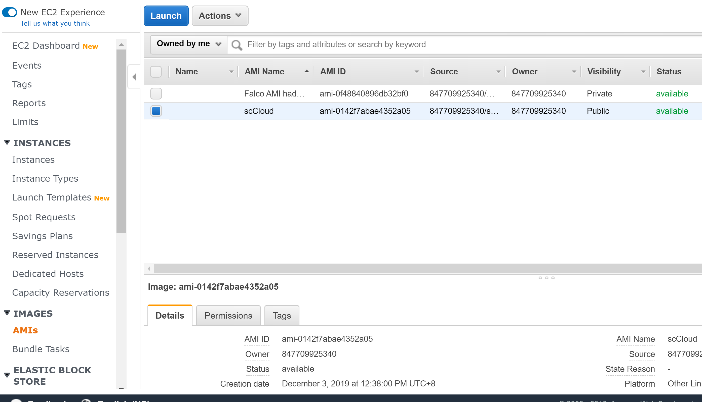
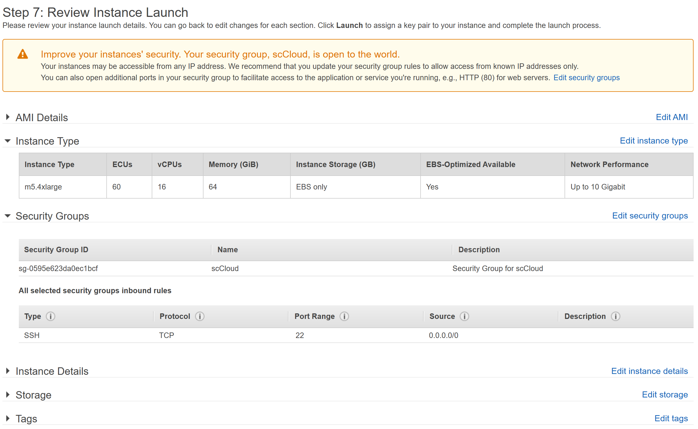
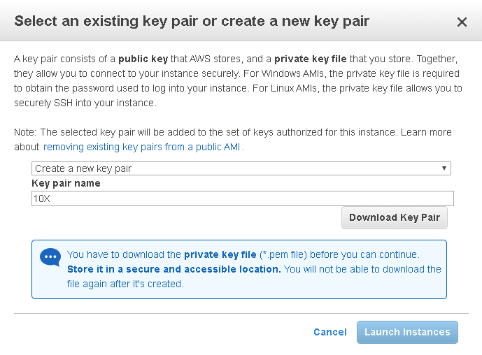
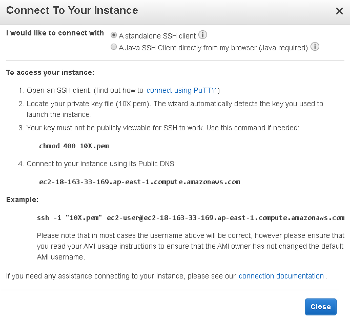
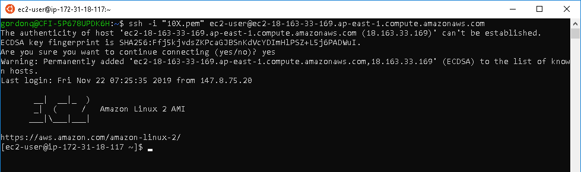

Chapter 3 AWS EC2 Instance
3.1 Introduction
An AWS EC2 instance is equivalent to a portable, customisable, intangible computer which is accessible through your personal local computer with a command line interface. We are able to specify memory requirements, CPU power (computing cores/threads), data storage size, and the operation system (e.g. Linux, Ubuntu, Windows) of this intangible computer.
3.2 Set Up
- Log into your AWS Account. You will be provided with a username.
Log in at https://847709925340.signin.aws.amazon.com/console
Username: [userX]
Password: scCloud
Change your region to US West (N. California) (us-west-1)
Navigate to EC2 under Amazon’s Services tab.
Select AMIs under IMAGES tab.
Search for “scCloud” and launch.

Launch specfication to use:
m5.4xlargeinstance type and click “Review and Launch”.Click “Edit Security Groups”, Select an existing security group: “scCloud”, and confirm by clicking “Review and Launch”.

Click Launch.
When given the “Key pair” prompt: select “Create a new key pair”. Name your key pair after your username e.g. “user1” and download the key. Then “Launch Instances”

**Quiz**
1. What is an AMI?
2. What is the meaning of m5.4xlarge?
3. What is the purpose of a key pair?3.3 Connecting to your EC2 instance
Open your command line interface
- Connect to your EC2 instance by entering the following command.
sudo ssh -i "user1.pem" ec2-user@ec2-XX-XXX-XX-XXX.ap-east-1.compute.amazonaws.comIf you do not have ssh installed, run this command:
sudo apt install --assume-yes openssh-server“user1.pem” should be the location of where you have stored your key pair. The X’s is the ip address of your personal EC2 instance. This can be found by going to EC2 Dashboard > Running Instances > Selecting your running instance > Click Connect.

- Type “yes” if prompted.

**Quiz**
1. What is ssh?3.4 For PuTTY Users Only
3.4.1 Convert Your Private Key Using PuTTYgen
PuTTY does not natively support the private key format for SSH keys. PuTTY provides a tool named PuTTYgen, which converts keys to the required format for PuTTY. You must convert your private key (.pem file) into this format (.ppk file) as follows in order to connect to your instance using PuTTY.
From the Start menu, choose All Programs, PuTTY, PuTTYgen.
Under Type of key to generate, choose RSA.
Choose Load. By default, PuTTYgen displays only files with the extension .ppk. To locate your .pem file, select the option to display files of all types.
Select your .pem file for the key pair that you specified when you launched your instance and choose Open. Choose OK.
To save the key in the format that PuTTY can use, choose Save private key. PuTTYgen displays a warning about saving the key without a passphrase. Choose Yes.
Note A passphrase on a private key is an extra layer of protection. Even if your private key is discovered, it can’t be used without the passphrase. The downside to using a passphrase is that it makes automation harder because human intervention is needed to log on to an instance, or to copy files to an instance.
- Specify the same name for the key that you used for the key pair (for example, my-key-pair). PuTTY automatically adds the .ppk file extension.
Your private key is now in the correct format for use with PuTTY. You can now connect to your instance using PuTTY’s SSH client.
3.4.2 Connecting to Your Linux Instance
Start PuTTY (from the Start menu, choose All Programs, PuTTY, PuTTY).
In the Category pane, choose Session, in the Host Name box, enter ec2-user@public_dns_name (see Get Information About Your Instance for how to get the public DNS name of the instance). For example: ec2-user@ec2-13-56-163-255.ap-east-1.compute.amazonaws.com
In the Category pane, expand Connection, expand SSH, and then choose Auth. Complete the following:
Choose Browse.
Select the .ppk file that you generated for your key pair and choose Open.
(Optional) If you plan to start this session again later, you can save the session information for future use. Under Category, choose Session, enter a name for the session in Saved Sessions, and then choose Save.
Choose Open